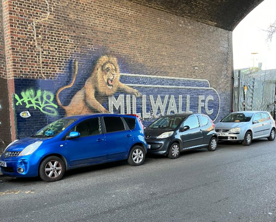
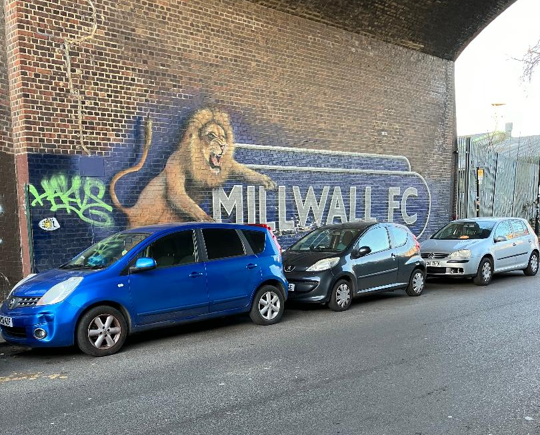

Ilderton Road
Ilderton Road is a thoroughfare linking South Bermondsey train station to Millwall Football Club's ground, The Den.
The path to The Den takes one through a landscape of gritty urbanity, where scrap metal merchants, second-hand tire shops, and warehouses punctuate the streetscape.
On match days, despite the intimidating surroundings, the vibrant energy of the local fans unwavering support for their team brings the area to life.


 
